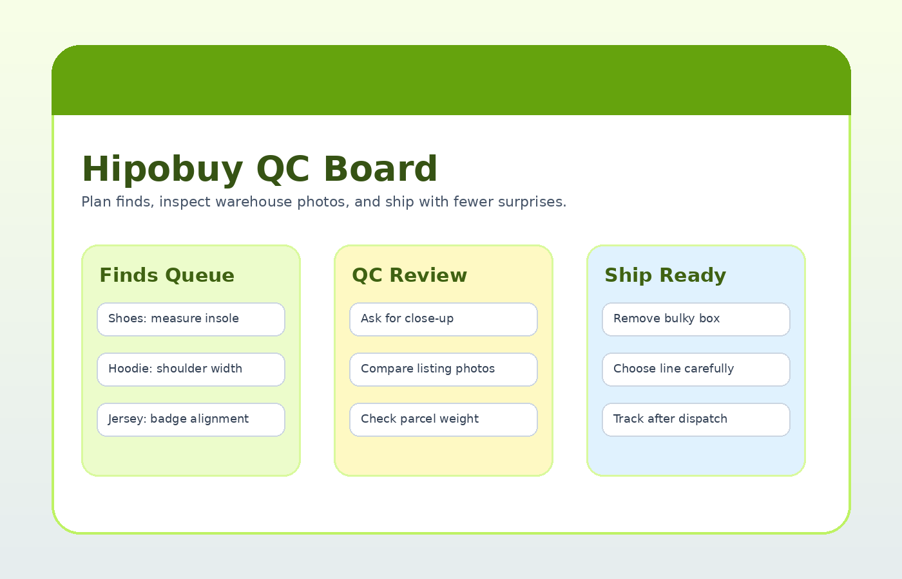

This is not just a list of links. Use the queue, QC board, and category routes to compare finds, request the right photos, and avoid shipping surprises.

Each category opens with practical checks instead of generic shopping copy.
fit-sensitive sneakers, runners, slides, and boots.
QC: insole lengthheavy fleece, knit layers, embroidered pulls, and oversized fits.
QC: chest widthgraphic tees, blank basics, wash-risk pieces, and summer layers.
QC: print placementpuffers, denim, varsity, technical shells, and seasonal outerwear.
QC: zipper photoscargo pants, denim, track pants, shorts, and wide-leg silhouettes.
QC: waist flat measurecaps, beanies, bucket hats, embroidery, and shape-sensitive accessories.
QC: front panel shapetracksuits, two-piece outfits, matched colors, and paired sizing decisions.
QC: top/bottom color matchpacks, basics, socks, comfort items, and small parcel fillers.
QC: pack countfootball kits, basketball jerseys, retro shirts, patches, and namesets.
QC: badge alignmentbags, belts, wallets, sunglasses, jewelry, and small-item add-ons.
QC: hardware colorseasonal picks, lifestyle extras, desk items, and unusual discoveries.
QC: seller photosUse these board-style checkpoints to move each find from candidate to ship-ready.
Collect candidates before submitting anything.
Approve, measure, exchange, or return based on warehouse photos.
Think about shipping weight before the cart gets bulky.
A beginner-friendly route for using Hipobuy without turning your first parcel into a guessing game.
A decision-first QC guide for Hipobuy buyers who need a clear framework before shipping.
Plan Hipobuy parcels around weight, volume, packaging choices, and shipping-line tradeoffs.
A practical look at Hipobuy from the buyer workflow side: payments, QC, support, sellers, and expectations.
Reduce risk while using Hipobuy with better account hygiene, payment habits, QC review, and parcel planning.
Learn what makes a Hipobuy spreadsheet useful: freshness, context, category balance, QC references, and buyer notes.
Open the full finds directory, then come back to this board before approving QC.
Open Full Finds Directory →